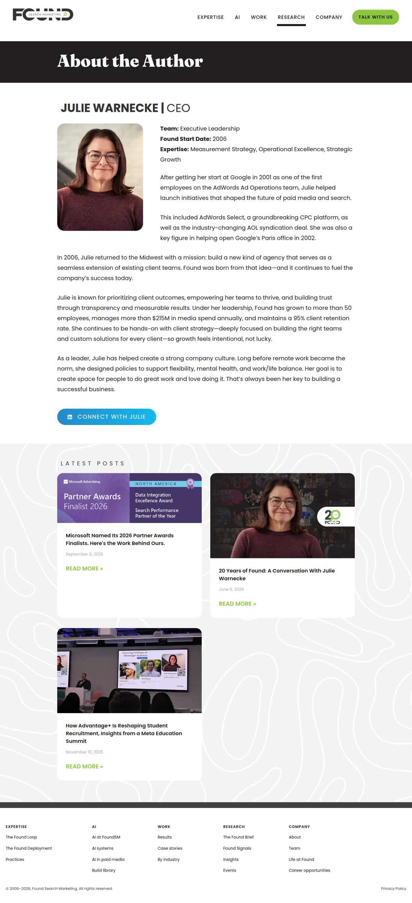
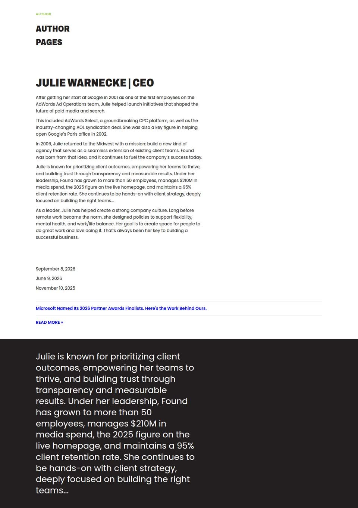
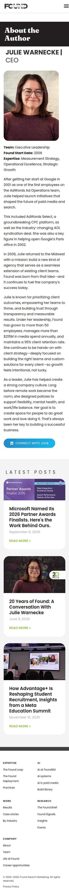
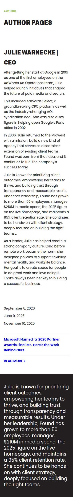

Blog and authors · large




kept, reworded (em dash replaced with a comma)
Before: In 2006, Julie returned to the Midwest with a mission: build a new kind of agency that serves as a seamless extension of existing client teams. Found was born from that idea—and it continues to fuel the company’s success today.
After: In 2006, Julie returned to the Midwest with a mission: build a new kind of agency that serves as a seamless extension of existing client teams. Found was born from that idea, and it continues to fuel the company’s success today.
kept, reworded (fact correction from the live homepage, which says Paid Media Spend $210M Managed in 2025; em dash replaced with a comma)
Before: Julie is known for prioritizing client outcomes, empowering her teams to thrive, and building trust through transparency and measurable results. Under her leadership, Found has grown to more than 50 employees, manages more than $215M in media spend annually, and maintains a 95% client retention rate. She continues to be hands-on with client strategy—deeply focused on building the right teams and custom solutions for every client—so growth feels intentional, not lucky.
After: Julie is known for prioritizing client outcomes, empowering her teams to thrive, and building trust through transparency and measurable results. Under her leadership, Found has grown to more than 50 employees, manages $210M in media spend, the 2025 figure on the live homepage, and maintains a 95% client retention rate. She continues to be hands-on with client strategy, deeply focused on building the right teams and custom solutions for every client, so growth feels intentional, not lucky.
30 of 30 items kept. Reworded items are still on the page. Open the list to see each one.